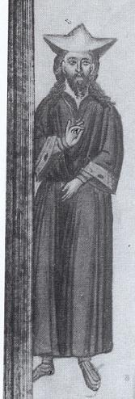

{kind=link}
{kind=link}
{kind=link}
{kind=link}
{kind=link}
{kind=link}
{kind=link}
{kind=link}
{kind=link}
{kind=link}
There was a recent booklet published in Greece with his life as a narrative. I will
post details sometime. The book also has a picture of the actual cell (kelion) where
Koukouzelis lived while in Mt Athos. I plan to scan that some time soon. The book
is called "O Osios Ioannis Koukouzelis" and the author is Georgιos Th. Militsis
(published 2004).
Manuscript illustration showing Koukouzelis and Koronis being taught by Ioannis
Glykys [pdf, 170 Kb] (from Emm. Giannopoulos' book)

St. Ioannis Koukouzelis
14th cent.
offered by S. Gugushvili)
What
did he look like?
Scan from manuscript showing Koukouzelis and Koronis being taught by Ioannis
Glykes
(scanned from E. Giannopoulos' book)
[pdf, 170 Kb] (offered by S. Gugushvili)
A. Andreou:
Manuscript L165 of the Great Lavra (late 14th century) contains a color
drawing of St. John Koukouzelis without a halo. There's a color photo of
this drawing on the cover of Angelopoulos' tape "Ioannou Koukouzeli tou
Maistoros - Erga 1" ELBYX 8. There is also a line art version of this in
Psachos' book "Parasimantiki" on p. 39, and a slightly cleaner version
of the same, redrawn in Cavarnos' "Byzantine Chant" booklet on p. 49,
which is also available online at the end of the following
file.
Where
did he come from?
Quote from OCA website (posted by S. Takis):
Saint John Koukouzelis, a native of Dirrachia (Bulgaria), was orphaned
in childhood. Endowed with a very fine voice, he entered the
Constantinople court school. He found favor with the emperor John
Comnenos (1118-1143) and became a chief court singer. The
sumptuousness and luxury of the imperial court bothered the pious
youth. Once, when asked what he had eaten for dinner, he replied,
"Beans and peas." The name Koukouzelis (beans and peas) stuck with him
ever after.
John began to seek ways to escape the enticements of the court, as
well as a marriage arranged for him by the emperor. By the will of
God, John met an igumen from Mt. Athos who had come to Constantinople
on monastery business. John revealed to the Elder his desire to leave
the court. The Elder blessed John to come to the Holy Mountain. There
John was accepted and tonsured a monk.
He was given the obedience of tending the monastery's flock of goats.
He took the flock to remote areas of the Holy Mountain to graze. There
in the wilderness the youth was able to to pray, contemplate God, and
sing the divine hymns in solitude. Charmed by the angelic beauty of
his voice, the animals gathered around him and listened as though
entranced.
Out of modesty and humility the singer did not reveal his gift to the
brethren. But once, a wilderness dweller overheard his moving pastoral
song and informed the igumen. St. John then revealed to the igumen
that he had been a court singer. He tearfully implored him to remain
in the wilderness with his flock.
The igumen was afraid that the emperor would find out that his
favorite court singer was on the Holy Mountain and force him to return
to court. Wishing to avoid the emperor's displeasure the igumen
journeyed to Constantinople to explain what had become of John and
begged him not to hinder the young man from his salvific path.
Thereafter John Koukouzelis sang on the right cleros in the cathedral
on Sundays and feastdays. Once, after singing an Akathist before an
icon of the Mother of God, John was granted a great mercy. The Mother
of God appeared to him in a dream and said, "Rejoice, John, and do not
cease to sing. For that, I shall not forsake you." With these works
she placed into John's hand a golden coin, then became invisible. This
coin was placed beneath the icon. Many miracles have been credited to
the coin and the icon. The icon, named the "Koukouzelissa" in memory
of St. John is located in the Lavra monastery of St. Athanasios. It is
commemorated on October 1, and on the 10th Friday after Pascha.
The Mother of God appeared to St. John again and healed him of a
grievous affliction of his legs, caused by the long standing in
church. St. John's remaining days were spent in intense ascetic
efforts. He also worked hard on the discipline of church singing,
gaining the title of both master teacher and regent (overseer).
He arranged and compiled melodies for church stichera verses, troparia
and kontakia. He edited texts of hymns and wrote his own troparia.
Some of his compositions are also in the following manuscripts: "A
Book, by the Will of God Encompassing All the Order of Progression of
Church Services, Compiled by Master Teacher John Koukouzelis," "Progression of Services, Compiled by Master Teacher John
Koukouzelis,""From the Beginning of Great Vespers through to the
Completion of the Divine Liturgy," and "The Science of Song and
Singing Signs with all the Legitimate Hand-Placement and with all the
Arrangements of Song."
Foreseeing the hour of his death, St. John took his leave of the
brethren, and in his last wishes bade them to bury him in the Church
of the Archangel that he built. Church singers reverence St. John
Koukouzelis as their own special patron saint.
Quote from a Bulgarian CD website (posted by S. Takis):
The theory of Eastern Church chants (which are still employed by the
Orthodox Church) was set up by St. John of Damascus in the 7th
century. From the multiple religious hymns performed by the various
Christian communities, St. John of Damascus chose only those which he
thought most suitable for the uniform use by the Church and compiled
the so called Vocal Eight-Part Chants Book, which is still in use by
the Orthodox Church. The "Octoich" by St. John of Damascus is strictly
defined within certain limits which restrict melody variation.
Bulgaria adopted Christianity as its official religion in 865. About
the same time, the brothers St. Cyril and St. Methodius created the
Slavonic alphabet (the Cyrillic alphabet), which allowed for religious
scriptures to be translated into the Slavonic languages, whereupon
services began to be performed in the language of everyday use. These
events served as the impetus of a tremendous cultural and political
bloom, which continued for the following two centuries. The
development of Eastern Orthodox singing saw another turning point
between the 13th and the 14th centuries when the Byzantine emperor
assigned John Kukuzel (The One Blessed with an Angel Voice) - a famous
Bulgarian church musicologist of the time ? to create a new fashion of
singing: more solemn and impressive than that of John of Damascus, so
that it could correspond to the grandeur of the Byzantine Empire. John
Kukuzel accomplished his assignment very successfully and created the
new type of singing which was called 'Papadic singing'. He had left to
the future generations a legacy of musical compositions of
unattainable beauty and performing challenge, the most brilliant one
being Selected Multiple Psalms to the Bulgarian Woman. The artist
dedicated this work to his mother and used in it motifs from Bulgarian
folk songs, which he had heard from his mother as a child. This set up
the beginning of artistic singing in the Orthodox Church.
S. Gugushvili:
The OCA version of Koukouzelis' life that Stan Takis quoted is inaccurate.
{kind=link}
1) Since the date of his life is a disputed thing,there's no justification for claiming that Koukouzelis lived during Ioannis Komnenos' times.
2) Koukouzelis' vita says that he came to Athos without revealing his identity (he was very famous by then). That's why he was assigned a task of tending aflock of goats.
3) "Thereafter John Koukouzelis sang on the right cleros in the cathedral on Sundays and feastdays." Well, the choirs on Mt. Athos switch on a regular basis (that's a very old custom), so there was no permanent right choir.
4) "Once, after singing an Akathist before an icon of the Mother of God, John was granted a great mercy." [snip] Actually according to the tradition Koukouzelis was chanting his own composition Anothenoi Profitai in front of an icon of Theotokos (latercalled Koukouzelissa). Even now on the panygeris ofthe Great Lavra they chant "Anothen oi Profitai" in front of this icon.
5) I don't quite understand this one "He also worked hard on the discipline of church singing, gaining the title of both master teacher and regent"
On the excerpts from the Bulgarian CD:
6) The theory of Eastern Church chants (which are still employed by the Orthodox Church) was set up by St. John of Damascus in the 7th century.It's very hard to comment on this one.
7) ...and compiled the so called Vocal Eight-Part Chants Book, which is still in use by the Orthodox Church.In reality eight modes (as well as Parakletike hymnsfor Sundays) existed before St. John Damascene. See arelated work by Ch. Renoux.
8) The development of Eastern Orthodox singing saw another turning point between the 13th and the 14th centuries when the Byzantine emperor assigned John Kukuzel (The One Blessed with an Angel Voice) - a famous Bulgarian church musicologist of the time ? to create a new fashion of singing: more solemn and impressive than that of John of Damascus, so that it could correspond to the grandeur of the Byzantine Empire.I'm not going to comment on "famous Bulgarian churchmusicologist", but the "assignement" story looks likea red herring. What are their proofs?
9) He had left to the future generations a legacy of musical compositions of unattainable beauty and performing challenge, the most brilliant one being Selected Multiple Psalms to the Bulgarian Woman.I didn't know that Koukouzelis had more than onesetting of the Polyeleos "Boulgara" (which btw Angelopoulos says is by Glykis :-)). But the statementis subjective anyway.
11) The artist dedicated this work to his mother and used in it motifs from Bulgarian folk songs, which he had heard from his mother as a child.Was the author there? Koukouzelis is claimed byMacedonians, Bulgarians, Albanians and Greeks P. Somalis: The ethnic origin of St. John Kukuzelis is rather complex. Indeed his name means "Green beans" in Bulgarian; yet Durrachion wherein he was born in now in modern Albania etc. etc. So, let's say he was 'Balkan' in general. When did he live? S. Gugushvili wrote: When did actually St. John Koukouzeles live? The modern agreement is the 1st half of the 14th c., but Evgenii Gertsman claims it's a misunderstanding, see http://www.csbi.ro/ro/r06/art14.pdf You need a free registration to read the paper. I also read in a review paper by Diane Touliatos that Karas thought St. John lived in the 12th c., here's a quote "Simon Karas has also produced important research which questions the date of Ioannes Koukouzeles. Karas emphatically states that the true date for Koukouzeles is in the second half of the twelfth century and offers as an explanation that Ioannes was confused with Grigorios Domestikos, the Koukouzeles, who was the fourteenth century domestikos at the monastery of Lavra." I guess both Gertsman and Karas somehow dismiss Koukouzeles' hagiographical vita. G. K. Michalakis: According to Konstantinos PSAHOS in his "hI Parasimantiki tis Byzantinis Mousikis" as re-edited by Georgios Chatzitheodorou at "Dionysos" editions, 1978, Athens (First edition = 1917), in page 37, subscript 29 one can read (as translated by GKM): Ioannis the Koukouzeles was born in Dyrrachia. He lived during the 12 (or) 13th century. See: M.I. GEDEON (with Omega) "Prosthiki eis tas peri Koukouzeli Paradoseis = addendum to the traditions concerning the Koukouzele, in Ecclesiastiki alitheia, February02, 1913, year 33 (LamdaGamma), number 5, page 36. In codex 317 of the Xeropotamic monastery, Koukouzelous' last name is given as "PAPADOPOULOS" ?..??.Two others are also known by the name of Koukouzeles: 1) Gregorios, student of Ioannis
2) And Ioasaf, who lived during the 18 century. Fr Ephraim wrote: There is a book in Greek about his life published in 1999 by Monk Avvakoum of the Holy Mountain which dedicates ten pages to this issue. He also believes that St. John Koukouzelis lived in the 12th century (as does also the music historian Georgios Papadopoulos, who published two books on the history of Byz. music in 1890 and 1904). But when I sent a photocopy of these ten pages to Dr. Dimitri Conomos, the Oxford musicologist (who specializes in the Byzantine music of this period), he replied with the following words verbatim: "The question about St John Koukouzeles is complex but the evidence in the photocopies you sent is unconvincing, incomplete and contradictory. There are plenty of pieces attributed to him bearing the epithet �fraggikon�, �organikon�, etc which could only have been written after the fourth crusade (i.e. after 1261); there are also references to Koukouzeles being contemporary with Patriarchs of the Palaeologan period. I do not accept that the title kyros refers to a deceased person: it is simply the genitive of kyr, a title that composers refer to themselves as (eg. the composer Manual Chrysaphes the lampadarios calls himself by this in a music manuscript that he himself wrote (Iviron 1120 � see my edition of his music treatise in the codex, published in Vienna in 1985). Once again, the style of his music has nothing in common with the compositions in pre-Crusader Byzantium. A complete and fully-researched work on the life and works of Koukouzeles has been done by Edward V. Williams, in a Yale University PhD dissertation dating from the late 1960s (I don�t have the exact reference with me here in Greece) which you can procure from Ann Arbor Dissertation Microfilms." In another discussion I had with Dr. Conomos, he mentioned that St John Koukouzeles uses the terms " Dorian, Phrygian, Lydian, Mixolydian, Aeolian, etc." in his treatise, and this also points to a post-fourth crusade dating for his life.